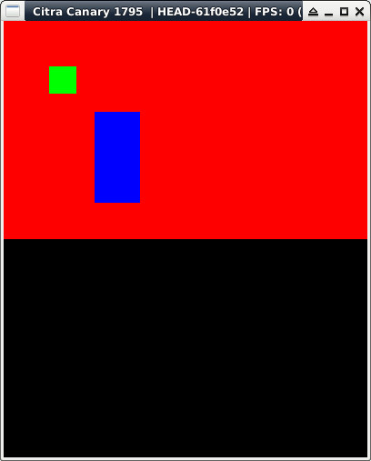

參考資訊：
https://hub.docker.com/r/greatwizard/devkitarm-3ds
main.c
#include <stdio.h>
#include <stdlib.h>
#include <SDL.h>
int main(void)
{
SDL_Rect rt = { 0 };
SDL_Surface *screen = NULL;
SDL_Init(SDL_INIT_VIDEO);
screen = SDL_SetVideoMode(400, 240, 16, SDL_HWSURFACE);
SDL_FillRect(screen, &screen->clip_rect, SDL_MapRGB(screen->format, 0xff, 0x00, 0x00));
rt.x = 50;
rt.y = 50;
rt.w = 30;
rt.h = 30;
SDL_FillRect(screen, &rt, SDL_MapRGB(screen->format, 0x00, 0xff, 0x00));
rt.x = 100;
rt.y = 100;
rt.w = 50;
rt.h = 100;
SDL_FillRect(screen, &rt, SDL_MapRGB(screen->format, 0x00, 0x00, 0xff));
SDL_Flip(screen);
SDL_Delay(3000);
SDL_Quit();
return 0;
}
完成
